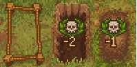
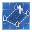

Gravesite
| Gravesite | |
|---|---|
 | |
Basic information
| |
Related pages :
|
Graveyard, Corpse |
Building Information
| |
Horizontal x Vertical :
|
3X3 |
Rotatable :
|
False |
Location(s)
| |
| Graveyard, Wheat Farm, Burned House | |

The gravesite is where you'll bury corpses. All you must do to designate an area as a grave place is select it as an option at the graveyard blueprint desk. Digging out a grave will use durability on your shovel. Each grave can take two decorations, one grave fence and one grave marker and each decoration will effect the  of the graveyard as a whole.
of the graveyard as a whole.
The number of positive modifiers to  a grave can benefit from is based on the number of
a grave can benefit from is based on the number of  and
and  on the corpse buried there. A grave's positive score cannot exceed the number of
on the corpse buried there. A grave's positive score cannot exceed the number of  , any modifiers added beyond that point will have no effect. Modifiers can be gained through decorations but also from the corpses themselves, attempting to remove a
, any modifiers added beyond that point will have no effect. Modifiers can be gained through decorations but also from the corpses themselves, attempting to remove a  when none are available will cause a corpse to gain an intrinsic +1
when none are available will cause a corpse to gain an intrinsic +1 . For more information on corpse rating see corpse and for more information on preparing corpses see the morgue location page.
. For more information on corpse rating see corpse and for more information on preparing corpses see the morgue location page.
Cost
| Icon | Materials Required | Energy | Notes |
|---|---|---|---|
 |
Dig with shovel | No technologies required. |
Decorations
Markers


Fences


| ||||||||